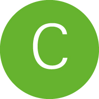

Convocatoria
Con la finalidad de contar con un espacio de difusión y divulgación de las actividades académicas, formativas, creativas y de investigación que realiza la Comunidad de la Escuela Nacional de Conservación, Restauración y Museografía (ENCRyM), nace la revista digital Archivo Churubusco con el propósito de agrupar y presentar estas experiencias y saberes en un sitio dinámico, bajo la premisa de que esos hechos se transforman todo el tiempo y que en este sentido emergen situaciones nuevas que se traducen en el uso de diversos materiales y recursos de comunicación, de tal suerte apostamos no por la solución sino por la experimentación.
La publicación aspira a ser un medio de fácil acceso, tanto en el contenido como en la forma, sin que con ello se sacrifique el rigor con el que los expertos del campo comparten sus aportaciones, en este sentido Archivo Churubusco convoca a toda su comunidad y aquéllos vinculados con la escuela a presentar sus colaboraciones originales. Se podrá participar con las distintas contribuciones a continuación enlistadas (A) en una diversidad de soportes (B) para ser publicadas en alguna de las secciones (C).
|  |
Notas
Todas las contribuciones serán evaluadas por pares ciegos y se notificará por escrito a los autores, quienes, en su caso, ajustarán las contribuciones a los resultados de la revisión, deben ser contribuciones originales que no hayan sido publicadas parcial o totalmente en otro medio, incluyendo redes sociales como Facebook, Instagram, Twitter, etcétera y con una temporalidad no mayor a 4 años, a menos que forme parte de un proceso de trabajo.
Las contribuciones de alumnos deberán venir acompañados y verificados de un asesor (profesor, investigador, tutor, etc.) con el fin de dar seguimiento al escrito hasta su posible publicación, el asesor podrá o no aparecer como coautor. Por este seguimiento se le otorgará una constancia como reconocimiento a su asesoría académica.
Fecha límite de recepción de contribuciones: 15 de julio de 2017, al correo: archivo_churubusco@encrym.edu.mx
Ir al cielo